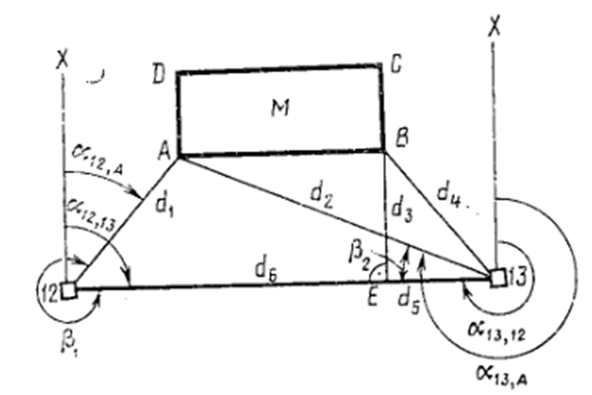
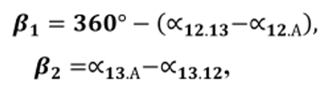
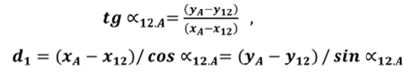

10-маруза Мавзу: Режалаш элементлари қийматларини аниқлаш усуллари
Бино ва иншоотларни лойиҳалашда унинг алоҳида нуқталарининг
планли ва баландлик ҳолатини жойда аниқлашда режалаш элементларидан
фойдаланилади. Масофа, бурчак ва нуқталар отметкалари режалаш элементлари ҳисобланади.
Уларни планда аниқлаш учун турли усуллардан фойдаланилади.
Қутбий координаталар усули. 12 ва 13 нуқталарни геодезик таянч тармоқ пунктлари деб
қабул қиламиз (1-расм). М иншоотнинг А нуқтасини 12-13 чизиққа нисбатан қутбий усулда жойга
кўчириш учун бошланғич маълумотларни тайёрлаш керак бўлсин. Бу ҳолат учун режалаш
элементлари бўлиб d1 ва d2 масофалар ҳамда β1 ва β2 бурчаклар хизмат
қилади.
бу ерда: р, бурчак ва d, масофа текшириш учун керак бўлади.

1-расм .Бошланғич маълумотларни тайёрлаш усуллари.
Расмдан қуйидагини ёзиш мумкин:


кийматлари хам шу тарзда аникланади.
Тўғри бурчакли координаталар усули. В нуктани (2-расм) жойга
кўчириш учун бошланғич маьлумотларни аниклаш керак булсин. Бунинг учун В нуктадан 12-13
чизиққа перпендикуляр туширилади. Кейин Е ва В нукталарнинг координаталари
аникланади.Тескари геодезик масала ечиш оркали , ва масофалар хисобланади. масофа В нуқтани
жойига тўғри кўчирилганлигини назорат килиш учун керак булади.
2-расм .Бошланғич маълумотларни тайёрлаш усуллари.
Иншоот нуқталарини кесиштириш (бурчак ва масофа кесиштириш) усули билан жойга кўчиришда
режалаш элементларини аниклаш кутбий координаталар усулининг комбинациясидан иборат бўлади.